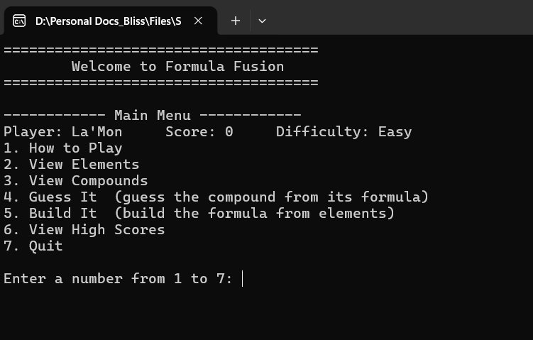
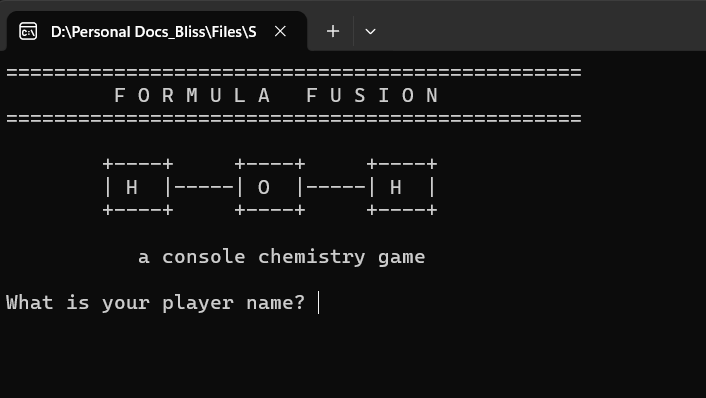
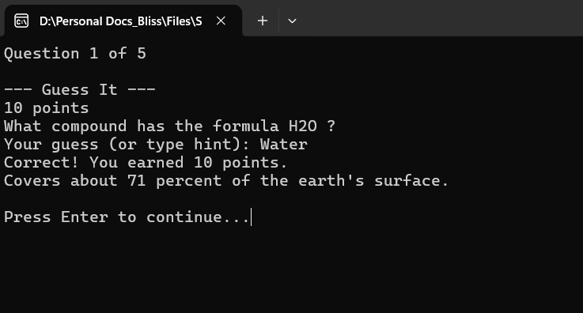

Language
C++ with classes, objects, vectors, structs, and split header and source files
Developer Portfolio
I’m a technical consultant and infrastructure engineer with over a decade in IT, now sharpening my software development skills through a Computer Science degree at Full Sail University. I enjoy building practical, well structured programs, from production cloud services to console applications, and turning messy problems into clean, working code.

About Me
My path into development started on the operations side, keeping infrastructure and services running, which taught me to care about reliability and clean design. Over eleven years I grew from system administration into automation and building software, and I founded and now operate a production SaaS platform along the way. I am formalizing my computer science foundation at Full Sail, and the part of programming I enjoy most is taking a large, intimidating problem and breaking it into small pieces that each just work.
C++ with classes, objects, vectors, structs, and split header and source files
Object oriented design, input validation, file input and output, and refactoring into reusable helpers
Visual Studio, Git and GitHub, branches and pull requests, and planning with GitHub issues
Featured Work
The project I built this term in COS119, showing how I plan, build, and refine a program over time.

C++ Console Application
A console chemistry game built in C++ where you fuse elements to build known compounds and guess compounds from their formulas. It is backed by the full 118 element periodic table and a library of compounds, and it saves your high scores between runs. I built it over four weeks for COS119, planning each milestone with GitHub issues and version control.
C++ (C++20), Visual Studio, Git and GitHub for version control, object oriented design across Element, Compound, and Game classes, vectors and structs, and file input and output.
As I kept adding features, both game modes ended up sharing the same steps for picking a random question and showing the result, and I found myself copying that code into two places. The trouble was that every change then meant editing both copies, which is exactly how bugs sneak in. I first tried keeping the two versions in sync by hand, but that got error prone fast. I fixed it by refactoring the shared logic into single helper functions, one round runner and one result function that both modes call, so that logic now lives in one place and I only have to fix it once.

This project taught me how to structure a program so it can keep growing without becoming fragile. Splitting features into small single purpose functions, separating my classes into header and source files, and using Git branches and pull requests for every change all kept the codebase easy to work in as it got bigger.
Contact
I am always open to talking about software, infrastructure, and new opportunities. Reach me through any of the links below.